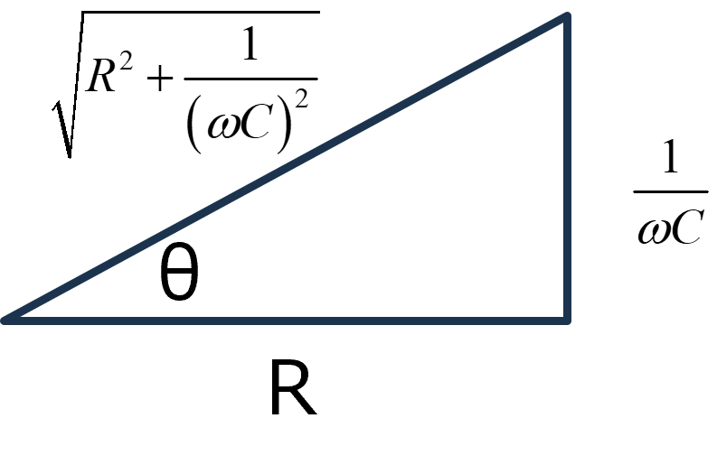

回路-09
RC直列交流回路
RとCが直列に並んだ交流回路を考えます．
交流ですが，インピーダンスを考えれば，直列の抵抗と同じように計算できます．
つまり，交流回路の場合には，コンデンサのインピーダンスを交流回路の場合の抵抗値 と考え，直流の場合と同じように直列の計算をすればいいのです．インピーダンスは，
\(\Large Z = R + \displaystyle \frac{1}{j \omega C} \)
となるので，
\(\Large V_0 \cdot e^{j \omega t} = Z \cdot I(t) = \left( R + \displaystyle \frac{1}{j \omega C} \right) \cdot I(t) = \left( R - \displaystyle \frac{j}{ \omega C} \right) \cdot I(t) \)
電流は，
\(\Large I(t) = \frac{1}{R - \displaystyle \frac{j}{ \omega C}} V_0 \cdot e^{j \omega t} \)
となります．分母に虚数が入るのはいやらしいので，
\(\Large = \frac{R + \displaystyle \frac{j}{ \omega C}}{\left(R - \displaystyle \frac{j}{ \omega C} \right) \left(R + \displaystyle \frac{j}{ \omega C} \right)} V_0 \cdot e^{j \omega t} \)
\(\Large = \frac{R + \displaystyle \frac{j}{ \omega C}}{R^2 + \displaystyle \frac{1}{ (\omega C)^2 }} V_0 \cdot e^{j \omega t} \)
となります．ここで複素平面を考えるために，
\(\Large = \frac{R + \displaystyle \frac{j}{ \omega C}}{\sqrt{R^2 + \displaystyle \frac{1}{ (\omega C)^2 }}} \frac{1}{\sqrt{R^2 + \displaystyle \frac{1}{ (\omega C)^2 }}}V_0 \cdot e^{j \omega t} \)
とし，最初の項を，複素平面で，

と考えると，
\(\Large cos \ \theta = \displaystyle \frac{R }{\sqrt{R^2 + \displaystyle \frac{1}{ (\omega C)^2 }}} \)
\(\Large j \ sin \ \theta = \frac{ \displaystyle \frac{j}{ \omega C}}{\sqrt{R^2 + \displaystyle \frac{1}{ (\omega C)^2 }}} \)
となるので，
\(\Large \frac{R + \displaystyle \frac{j}{ \omega C}}{\sqrt{R^2 + \displaystyle \frac{1}{ (\omega C)^2 }}} = cos \ \theta + j \ sin \ \theta = e^{j \ \theta} \)
となります．ここで，
\(\Large tan \ \theta = \displaystyle \frac{1}{\omega RC} \)
です．したがって，電流は，
\(\Large I(t) = e^{j \ \theta} \cdot \frac{V_0}{\sqrt{R^2 + \displaystyle \frac{1}{ (\omega C)^2 }}} \cdot V_0 \cdot e^{j \omega t} \)
\(\Large = \displaystyle \frac{V_0}{\sqrt{R^2 + \displaystyle \frac{1}{ (\omega C)^2 }}} \cdot e^{j (\omega t + \theta)} \)
となります．ここで，三角関数に戻すために，虚数部分のみ取り出すと，
\(\Large Im[I(t)] = \frac{V_0}{\sqrt{R^2 + \displaystyle \frac{1}{ (\omega C)^2 }}} \cdot sin \ (\omega t + \theta) \)
となります．
真面目に解くと．．．ここ，に記載しました．
実際にRC交流回路を作ってみてシミュレートしてみました．

条件は，
f = 40 Hz
C = 34 μF
V0 = 1 V
ということで，
\(\Large \omega = 40 \cdot 2 \cdot \pi = 251.3 \ rad/s \)
振幅
コンデンサ直下の電流値の振幅は，
\(\Large \frac{V_0}{\sqrt{R^2 + \displaystyle \frac{1}{ (\omega C)^2 }}} = 6.5 \ mA \)
と電流の振幅が計算どおりとなっていることがわかります．
位相
今回は，この計算は使わずに，0点同士の差から求めました．
\(\Large \Delta t = 3.32 \ ms \)
理論値は，
\(\Large tan^{-1} \frac{1}{ \omega R C} = 0.86 rad \)
周波数は40 Hz，ですので，一周期が，1/40 = 25 ms.
\(\Large \frac{0.86}{ 2 \pi} \times 25 \ ms = 3.44 \ ms \)
とほぼ一致していることがわかります．
せっかくなので，ここ，に過渡現象を含めたRCの直列交流回路にを計算していきます．
０９－２．RC直列交流回路を真面目に解く
０９－３．RC直列交流回路をラプラス変換で真面目に解く
０９－４．RC直列交流回路を真面目に解く - 電圧を主体に考える
０９－５．RC直列交流回路をラプラス変換で真面目に解く - 電圧を主体に考える
といくつかの方法で解いてみました．
次に，RLの直列交流回路，について考えていきます．